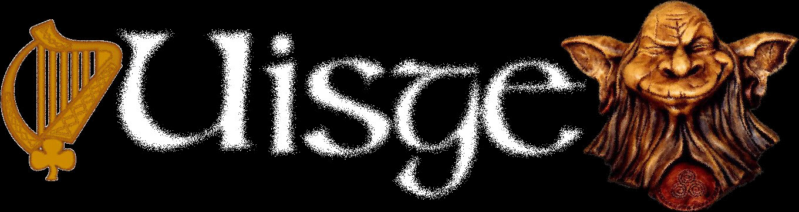
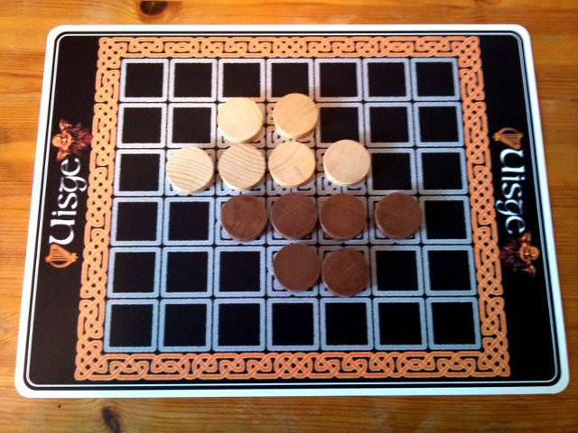
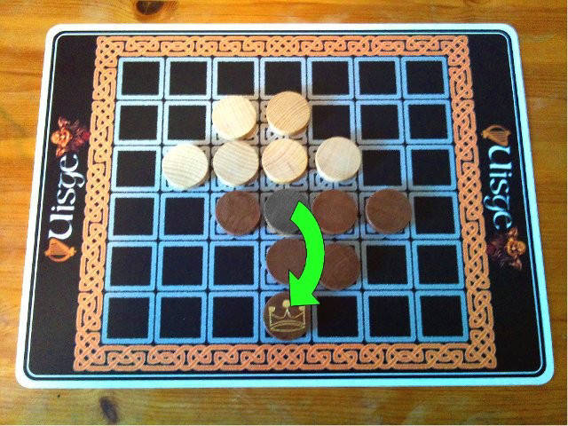
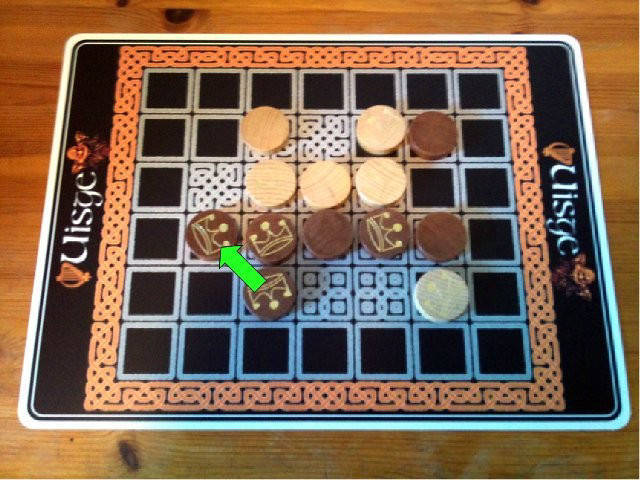
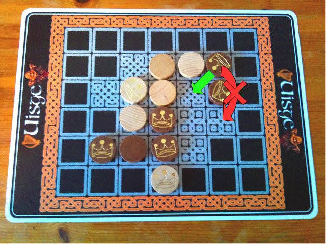

Uisge ist ein Spiel mit
vermutlich urspruenglich irischen, keltischen oder
gaelischen Einfluessen.
Jeder der zwei Spieler kontrolliert sechs Spielsteine eigener Farbe. Jeweils eine Seite der Spielsteine wird als Koenig bezeichnet und zeigt eine abgebildete Krone. Die andere Seite ohne jegliches Symbol des Spielsteins stellt einen Bauern dar.
Gespielt wird auf einem Spielbrett mit sieben auf sechs Feldern. Die hier beschriebene Variante des Uisge-Spiels zeigt ein Spielbrett auf dem die Startpositionen der Spielsteine beider Spieler markiert sind. Auf diese Startpositionen werden die Spielsteine bei Spielbeginn als Bauern positioniert.
Startaufstellung

Umdrehen der Spielsteine beim Sprung
Das Zugrecht wechselt jeweils pro Zug zwischen den Spielern. Ein Zug eines Spielers besteht darin, einen Spielstein seiner Farbe zu bewegen. Dabei kann ein eigener Spielstein gradlinig orthogonal, also horizontal oder vertikal, aber nicht diagonal, ueber irgendeinen benachbarten eigenen oder fremden einzelnen Spielstein auf ein direkt angrenzendes freies Feld springen. Der springende Spielstein wird dann jeweils entweder von Koenig nach Bauer oder von Bauer nach Koenig umgedreht ( je nachdem, welche Seite vor dem Sprung oben lag).
Zusaetzlich ist es einem Koenig erlaubt, auf ein direkt seiner Position angrenzendes freies Feld in horizontaler, vertikaler oder diagonaler Richtung zu ziehen. In diesem Fall, dass der Koenig ein Feld weit zieht und nicht springt, wird dieser nicht umgedreht und bleibt also weiterhin ein Koenig.
Koenige koennen zusaetzlich orthogonal oder diagonal auf ein angrenzendes Feld ziehen.

Hier waere der Sprung des Koenigs nicht zulaessig, da dieser so die gesamte Steingruppe trennen würde und damit eine zweite Steingruppen mit zwei Spielsteinen entstuende. Der diagonale Zug ist aber erlaubt.
Aufgepasst! Waehrend des gesamten Spielverlaufs muessen alle zwoelf Spielsteine immer miteinander jeweils horizontal und vertikal verbunden bleiben und exakt eine zusammenhaengende Gruppe bilden. Damit sind Zuege oder Spruenge unzulaessig, falls die Spielsteine nicht horizontal oder vertikal mit benachbarten eigenen oder fremden Spielsteinen verbunden bleiben. In einem solchen Fall waeren Spielsteine oder Steingruppen dann diagonal zueinander positioniert und damit nicht verbunden.
Das Spiel gewinnt der Spieler, dessen sechs Spielsteine gleichzeitig nur Koenige zeigen.
Es kann zu Spielsituationen kommen, in denen ein Spieler keine Zugmoeglichkeiten mehr hat. Solche Situationen koennen nach einer der folgenden Optionen geregelt werden:
- Der Spieler ohne Zugmoeglichkeit verliert das Spiel
- Oder der Spieler ohne Zugmoeglichkeit gewinnt das Spiel. Aehnlich wie die Idee im Oware/Awale (einem Manquala Spiel) ist es dann nicht erlaubt, den Gegner ohne Zugmoeglichkeit zu lassen.
- Das Spiel endet unentschieden.
- Das Spiel laeuft einfach weiter und der Spieler ohne Zugmoeglichkeit setzt seinen Zug aus.
Uisge soll ein Spiel mit irischen, keltischen oder gaelischen Einfluessen aus dem zwoelften Jahrhundert sein. Einen vertrauenswuerdigen Beleg oder eine Quelle oder Referenz als Nachweis hierzu ist jedoch unbekannt. Wahrscheinlich ist dies eher aus marketingtechnischen Gruenden durch den Verleger nach 1983 behauptet worden. Tatsaechlich ist 1983 das Spiel unter dem Namen Scorpion im Magazin Spielbox im W. Nostheide Verlag GmbH erschienen. Als Spieldesigner ist Roland Siegers angegeben. Diese urspruengliche Version ist eindeutig nicht irisch, keltisch oder gaelisch gefaerbt. Nun ja,... Nichts desto trotz bedeutet das gaelische uisce beatha eigentlich Wasser des Lebens, siehe http://en.wikipedia.org/wiki/Whisky
Grafiken, Fotographien und Zeichensaetze, die genutzt wurden, um diese Uisge-Variante umzusetzen, sind entweder eigenes Werk oder stammen aus Quellen, die diese als frei verfuegbar, Freeware, frei fuer kommerzielle und persoenliche Nutzung im Sinne eines Fair Use oder aehnlich freien Lizenzbedingungen angeben.
Besonderen Dank gilt
- Jerry Landers (http://www.mouserfonts.com) fuer den Bouwsma Uncial-Zeichensatz,
- Beekeeper Labs (http://beekeeperlabs.com/knotwize.html) fuer KnotWize, das zur Erstellung des Spielbrettes genutzt wurde.
Nach bestem Wissen und Gewissen wird das Spiel Uisge seit laengerem und momentan nicht mehr offiziell verlegt. Uisge wurde 1984 mit einem Sonderpreis ausgezeichnet als Spiel des Jahres in der Kategorie Schoenes Spiel. Mehr Informationen zu Editionen, Verlegern und zugehoerige Informationen sind auch zu finden unter http://boardgamegeek.com/boardgame/11421/uisge